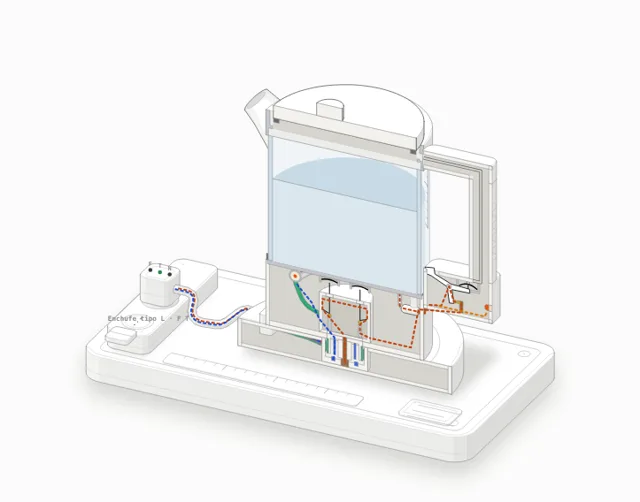
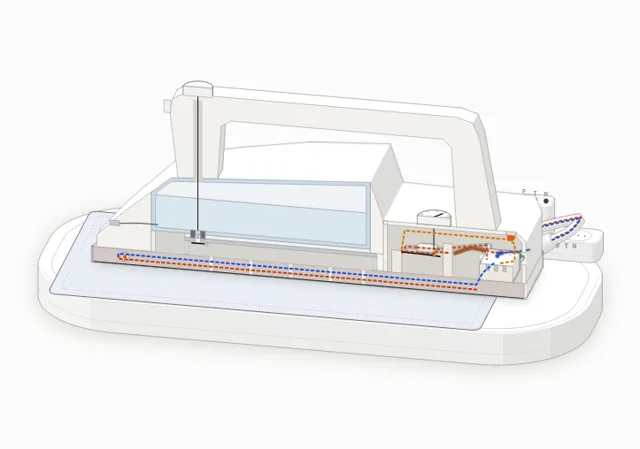
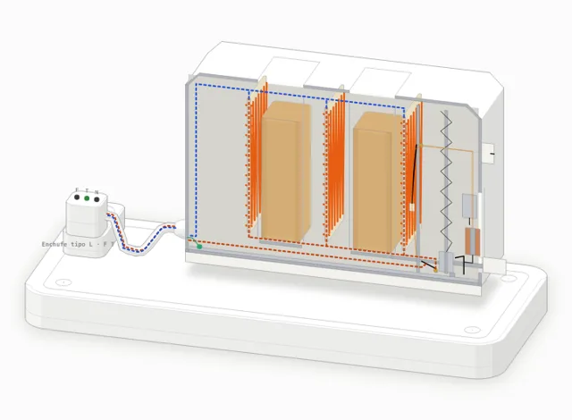
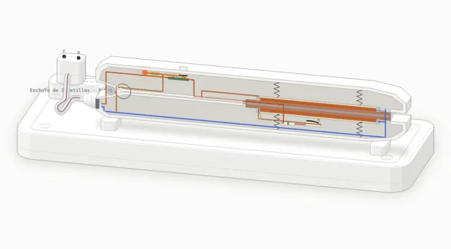
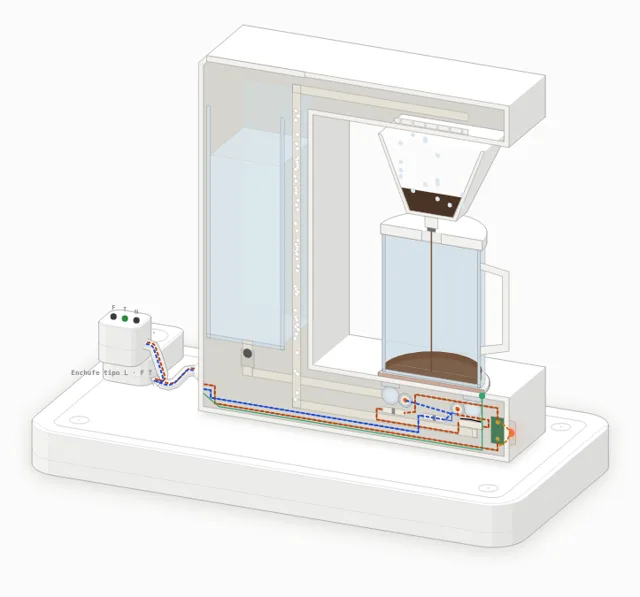
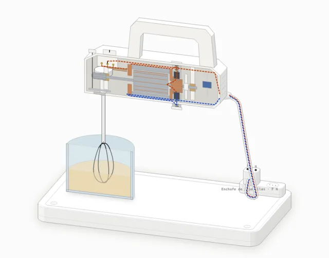
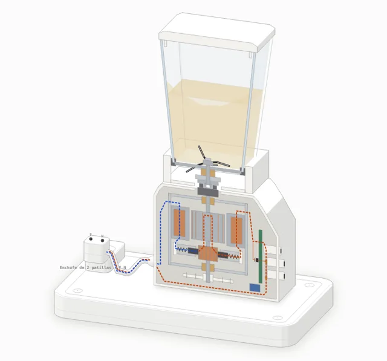
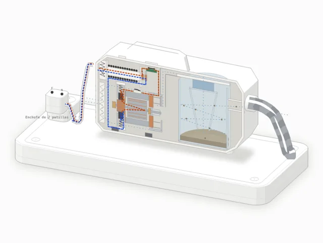

Cómo usar cada figura
- Haz funcionar el aparato: haz clic sobre la figura (o usa la barra espaciadora). El reloj de la simulación corre acelerado.
- Vista: elige En corte para ver el interior y el flujo de corriente, o Completo para ver el aparato entero.
- Fallas típicas: en el panel derecho, elige una queja; la figura marca la pieza y simula el síntoma. Abajo están los puntos a comprobar del libro, con sección y página.
- Mediciones: cada una indica dónde van las puntas, la lectura normal y si se hace DESENCHUFADO o ENCHUFADO. Las que se hacen desenchufado detienen la simulación.
- Componentes: pasa el cursor sobre un componente, en la figura o en la lista bajo ella, para ver qué es y qué hace.
Aparatos de calor
Resistencias, termostatos y fusibles.
-

Fig 1
Hervidor eléctrico
Jarra de vidrio con base 360°, 1850 W
Resistencia blindada bajo la placa, termostatos de vapor y de hervor en seco, fusible térmico y base de contacto.
-

Fig 2
Plancha a vapor
Plancha de vapor, 2000 W
Resistencia en la suela, termostato con selector, fusible antitérmico, depósito y válvula de vapor.
-

Fig 4
Tostadora vertical
Dos ranuras, 900 W
Resistencias de nicromo sobre mica, carro con pestillo y solenoide, bimetal con mando de color.
-

Fig 8
Plancha de pelo
Dos placas con resistencia, ≈200 °C
Placas flotantes, resistencias, mando de temperatura, fusible, testigo de neón y rótula del cable.
-

Fig 9
Cafetera de goteo
Tipo Oster 12 tazas o Russell Hobbs, 1000 W
Depósito, válvula de retención, tubo calefactor, repartidor, espita antigoteo y placa calientaplatos.
Aparatos con motor
Motores universales, escobillas, colectores y transmisiones.
-

Fig 3
Batidora de mano
Tres velocidades
Motor universal con escobillas y colector, sinfín y engranaje del batidor, selector con tomas del campo.
-

Fig 5
Licuadora / trituradora
Motor vertical, velocidad baja con diodo
Motor universal vertical, pulsadores con diodo, acoplamiento, casquillo y cuchillas.
-
Fig 7
Batidora convencional de 5 velocidades
Tipo Oster FPSTHM101, 200 W
Como la anterior, con selector de cinco posiciones y cinco tomas del devanado de campo.
-

Fig 10
Aspiradora de carro sin bolsa
Tipo Rowenta Compact Power XXL
Motor con ventilador, protector térmico, ciclón y filtros, carrete del cable con anillos y resorte.
Motor y calor
Ventilador y resistencias en el mismo aparato.
No hay aparatos que coincidan con la búsqueda.
Antes de reparar
- Trabajar desenchufado: con el ohmímetro el aparato siempre va desconectado de la red.
- No suponer que un circuito está abierto por la posición del interruptor: comprobarlo con un instrumento que funcione.
- No anular nunca un dispositivo de seguridad ni la conexión a tierra.
- Usar repuestos correctos; no empalmar resistencias.
- Tras rearmar, comprobar que no hay fallas a masa antes de devolver el aparato.
Falla a masa: contacto indebido entre una parte con tensión y una parte metálica que se puede tocar. «Eliminar la masa» es encontrar ese contacto y repararlo; nunca quitar la tierra.